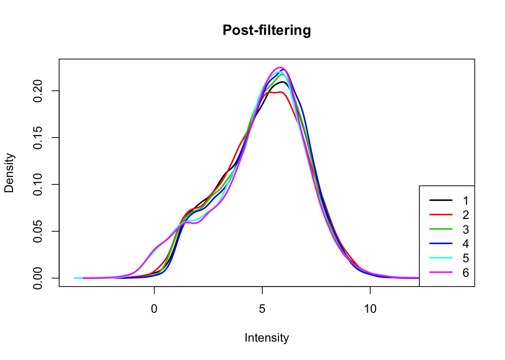
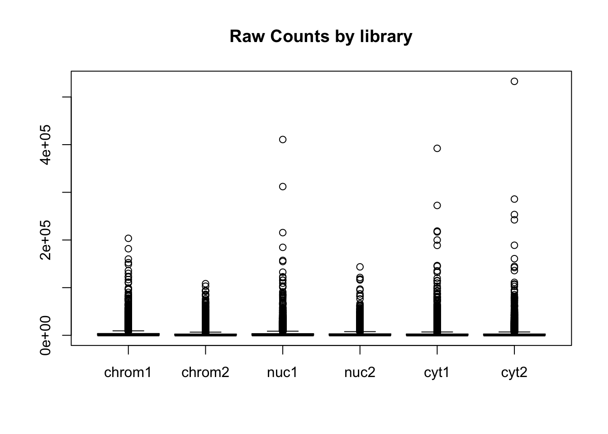
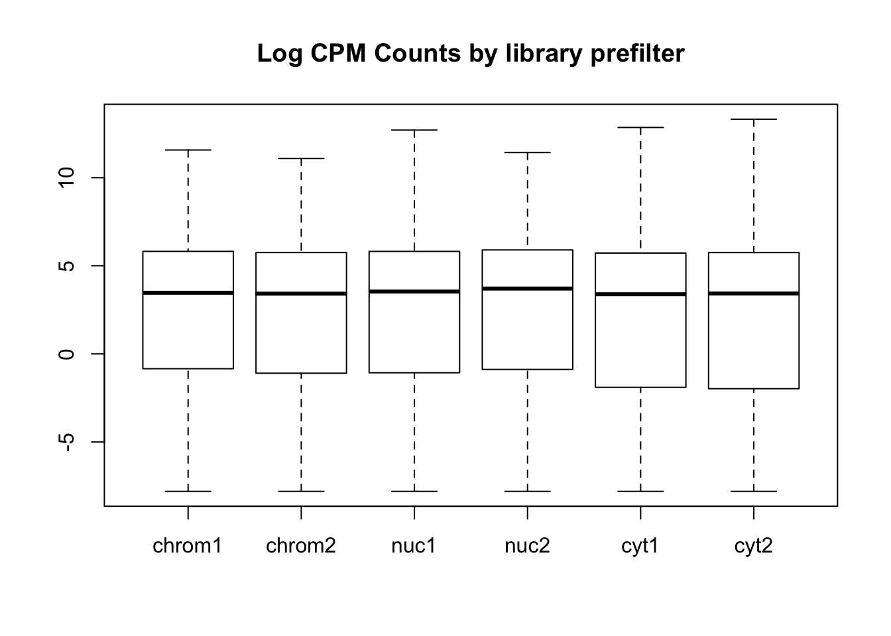
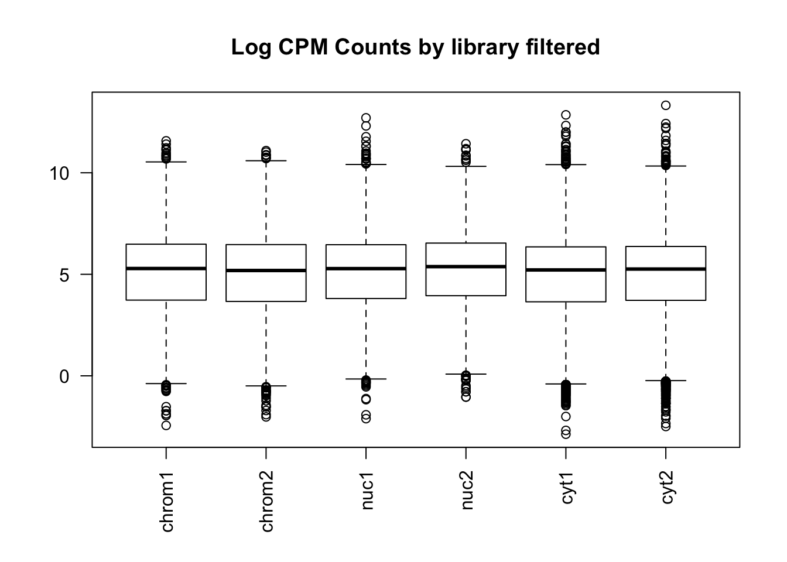
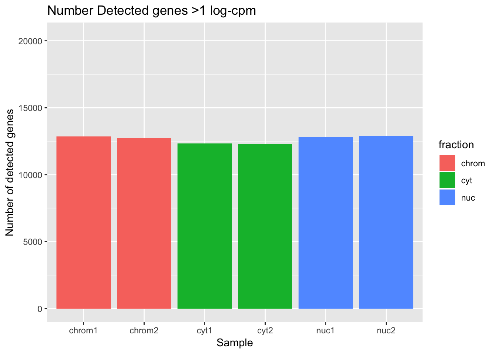
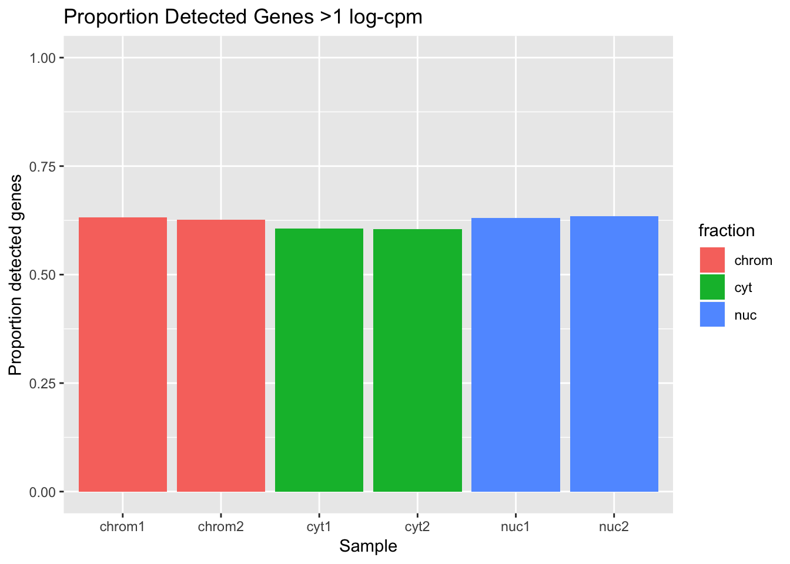
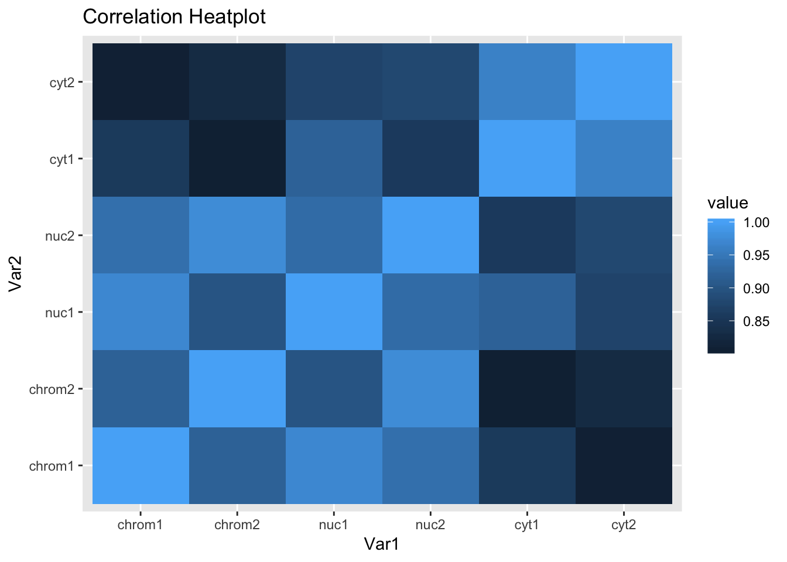

Total and Nuclear fraction RNA seq
Briana Mittleman
5/8/2018
Last updated: 2018-05-09
workflowr checks: (Click a bullet for more information)-
✖ R Markdown file: uncommitted changes
The R Markdown file has unstaged changes. To know which version of the R Markdown file created these results, you’ll want to first commit it to the Git repo. If you’re still working on the analysis, you can ignore this warning. When you’re finished, you can runwflow_publishto commit the R Markdown file and build the HTML. -
✔ Environment: empty
Great job! The global environment was empty. Objects defined in the global environment can affect the analysis in your R Markdown file in unknown ways. For reproduciblity it’s best to always run the code in an empty environment.
-
✔ Seed:
set.seed(12345)The command
set.seed(12345)was run prior to running the code in the R Markdown file. Setting a seed ensures that any results that rely on randomness, e.g. subsampling or permutations, are reproducible. -
✔ Session information: recorded
Great job! Recording the operating system, R version, and package versions is critical for reproducibility.
-
Great! You are using Git for version control. Tracking code development and connecting the code version to the results is critical for reproducibility. The version displayed above was the version of the Git repository at the time these results were generated.✔ Repository version: 5f12007
Note that you need to be careful to ensure that all relevant files for the analysis have been committed to Git prior to generating the results (you can usewflow_publishorwflow_git_commit). workflowr only checks the R Markdown file, but you know if there are other scripts or data files that it depends on. Below is the status of the Git repository when the results were generated:
Note that any generated files, e.g. HTML, png, CSS, etc., are not included in this status report because it is ok for generated content to have uncommitted changes.Ignored files: Ignored: .Rhistory Ignored: .Rproj.user/ Untracked files: Untracked: _workflowr.yml Unstaged changes: Modified: analysis/_site.yml Modified: analysis/about.Rmd Deleted: analysis/chunks.R Modified: analysis/index.Rmd Modified: analysis/license.Rmd Modified: analysis/total.nuc.rnaseq.Rmd
Expand here to see past versions:
| File | Version | Author | Date | Message |
|---|---|---|---|---|
| html | 7c5705d | Briana Mittleman | 2018-05-09 | Build site. |
| Rmd | 7a9e443 | Briana Mittleman | 2018-05-09 | fix sample switch |
| html | ec089e5 | Briana Mittleman | 2018-05-09 | Build site. |
| Rmd | ca8eb3a | Briana Mittleman | 2018-05-09 | add dist. gene body plot |
| html | 076baa0 | Briana Mittleman | 2018-05-08 | Build site. |
| Rmd | 8f6c959 | Briana Mittleman | 2018-05-08 | add count boxplots |
| html | 95a41f9 | Briana Mittleman | 2018-05-08 | Build site. |
| Rmd | 1f9e243 | Briana Mittleman | 2018-05-08 | fix typo |
| html | 394259e | Briana Mittleman | 2018-05-08 | Build site. |
| Rmd | 6b7d921 | Briana Mittleman | 2018-05-08 | correlation heatplot |
| html | 3f23e0e | Briana Mittleman | 2018-05-08 | Build site. |
| Rmd | c553564 | Briana Mittleman | 2018-05-08 | low level analysis for RNA seq |
| html | 3dd80ef | Briana Mittleman | 2018-05-08 | Build site. |
| Rmd | 519447d | Briana Mittleman | 2018-05-08 | Add total.nuc.rnaseq analysis |
I will use this analysis to look at general QC measurements for the RNA seq on the total and nuclear fraction with respect to my three-prime-seq snakemake pipeline.
There are 2 lines with files for chromatin, nuclear and cytoplasmic. There is a sample switch in this anaylsis chrom.2.S3 and Cyt.2.S1 are switched. We know this from a heatmap analysis.
Library
library(ggplot2)
library(dplyr)
Attaching package: 'dplyr'The following objects are masked from 'package:stats':
filter, lagThe following objects are masked from 'package:base':
intersect, setdiff, setequal, unionlibrary(edgeR)Warning: package 'edgeR' was built under R version 3.4.3Loading required package: limmaWarning: package 'limma' was built under R version 3.4.3library(workflowr)Loading required package: rmarkdownThis is workflowr version 1.0.1
Run ?workflowr for help getting startedlibrary(reshape2)Warning: package 'reshape2' was built under R version 3.4.3Mapped reads
First I want to look at the number of reads that map. I will flip the sample swap for this analysis so it it correct.
#wc -l file / 4
read_chrom1=74784589
read_chrom2= 56100500
read_nuc1= 73481177
read_nuc2= 60386733
read_cyt1= 63641411
read_cyt2= 61957677Now look at how many reads mapped:
#samtools view -c -F 4 file
map_chrom1=67829422
map_chrom2=49619272
map_nuc1= 65023318
map_nuc2= 53445556
map_cyt1=53856948
map_cyt2=52630632Percent mapped per line:
perc_map_chrom1= map_chrom1/read_chrom1 *100
perc_map_chrom2=map_chrom2/read_chrom2 * 100
perc_map_nuc1=map_nuc1/read_nuc1 * 100
perc_map_nuc2= map_nuc2/read_nuc2 * 100
perc_map_cyt1=map_cyt1/read_cyt1 * 100
perc_map_cyt2=map_cyt2/read_cyt2 * 100Put this information in a dataframe to plot it:
percmap=c(perc_map_chrom1,perc_map_chrom2,perc_map_nuc1,perc_map_nuc2,perc_map_cyt1, perc_map_cyt2)
fraction=c("chrom", "chrom", "nuc", "nuc", "cyt", "cyt")
sample=c("chrom1", "chrom2", "nuc1", "nuc2", "cyt1", "cyt2")
percmap_df=as.data.frame(cbind(sample,fraction, percmap), stringsAsFactors = F)
percmap_df$percmap= as.numeric(percmap_df$percmap)
ggplot(percmap_df, aes(y=percmap, x=sample, fill=fraction)) + geom_col() + scale_y_continuous(limits=c(0,100)) + labs(y="Percent mapped", title="Percent of reads mapped") This shows that mapping is a little bit higher for the cytoplasmic and nuclear fractions than for the chromatin fraction.
This shows that mapping is a little bit higher for the cytoplasmic and nuclear fractions than for the chromatin fraction.
Gene count analysis:
Import gene count data. I will fix the sample switch at this point.
cov_chrom1=read.table("../data/total.nuc.cyt.genecounts/gene_covYG-SP20-Chrom-1_S3_L005_R1_001-genecov.txt", stringsAsFactors = FALSE)
names(cov_chrom1)=c("chr", "start", "end", "gene", "score", "strand", "count" )
cov_chrom2=read.table("../data/total.nuc.cyt.genecounts/gene_covYG-SP20-Cyt-2_S4_L005_R1_001-genecov.txt", stringsAsFactors = FALSE)
names(cov_chrom2)=c("chr", "start", "end", "gene", "score", "strand", "count" )
cov_nuc1=read.table("../data/total.nuc.cyt.genecounts/gene_covYG-SP20-Nuc-1_S2_L005_R1_001-genecov.txt", stringsAsFactors = FALSE)
names(cov_nuc1)=c("chr", "start", "end", "gene", "score", "strand", "count" )
cov_nuc2=read.table("../data/total.nuc.cyt.genecounts/gene_covYG-SP20-Nuc-2_S5_L005_R1_001-genecov.txt", stringsAsFactors = FALSE)
names(cov_nuc2)=c("chr", "start", "end", "gene", "score", "strand", "count" )
cov_cyt1= read.table("../data/total.nuc.cyt.genecounts/gene_covYG-SP20-Cyt-1_S1_L005_R1_001-genecov.txt", stringsAsFactors = FALSE)
names(cov_cyt1)=c("chr", "start", "end", "gene", "score", "strand", "count" )
cov_cyt2=read.table("../data/total.nuc.cyt.genecounts/gene_covYG-SP20-Chrom-2_S6_L005_R1_001-genecov.txt", stringsAsFactors = FALSE)
names(cov_cyt2)=c("chr", "start", "end", "gene", "score", "strand", "count" )Look at the distribution of the gene counts. To do this I need to make a matrix with gene by sample to give the cpm command.
count_matrix=cbind(cov_chrom1$count, cov_chrom2$count, cov_nuc1$count, cov_nuc2$count, cov_cyt1$count, cov_cyt2$count)
gene_length=cov_chrom1 %>% mutate(genelength=end-start) %>% select(genelength)
gene_length_vec=as.vector(gene_length$genelength)
count_matrix_cpm=cpm(count_matrix, log=T, gene.length=gene_length_vec )Plot the distribution of the log cpm counts.
plotDensities(count_matrix_cpm, legend = "bottomright", main="Pre-filtering")
abline(v = 0, lty = 3)I will only keep genes that have a log cpm greater than 1 in at least 3 samples.
keep.exprs=rowSums(count_matrix_cpm>1) >=3
count_matrix_cpm_filt= count_matrix_cpm[keep.exprs,]
plotDensities(count_matrix_cpm_filt, legend = "bottomright", main="Post-filtering")
Create boxplots:
#pre standardization
colnames(count_matrix)=sample
boxplot(count_matrix, main="Raw Counts by library")
#prefilt
colnames(count_matrix_cpm)=sample
boxplot(count_matrix_cpm, main="Log CPM Counts by library prefilter")
#filtered
colnames(count_matrix_cpm_filt)=sample
boxplot(count_matrix_cpm_filt, las=2,main="Log CPM Counts by library filtered") This shows that we do not need to do any extreme normalization. I will skip it for this initial analysis.
Now I can look at the number of genes detected in each sample according to this filtering practice. I will use >1 log cpm for “detected”.
detected_chrom1=sum(count_matrix_cpm_filt[,1] > 1)
detected_chrom2=sum(count_matrix_cpm_filt[,2] > 1)
detected_nuc1=sum(count_matrix_cpm_filt[,3] > 1)
detected_nuc2=sum(count_matrix_cpm_filt[,4] > 1)
detected_cyt1=sum(count_matrix_cpm_filt[,5] > 1)
detected_cyt2=sum(count_matrix_cpm_filt[,6] > 1)Plot these values like the percent mapped.
detected_vec=c(detected_chrom1, detected_chrom2, detected_nuc1, detected_nuc2, detected_cyt1, detected_cyt2)
det_df=as.data.frame(cbind(sample,fraction, detected_vec), stringsAsFactors = F)
det_df$detected_vec= as.numeric(det_df$detected_vec)
ggplot(det_df, aes(y=detected_vec, x=sample, fill=fraction)) + geom_col() + labs(x="Sample", y="Number of detected genes", title="Number Detected genes >1 log-cpm") + scale_y_continuous(limits=c(0,20345))
total_genes=20345
det_df_prop= det_df %>% mutate(prop_det=detected_vec/total_genes)
ggplot(det_df_prop, aes(y=prop_det, x=sample, fill=fraction)) + geom_col() + labs(x="Sample", y="Proportion detected genes", title="Proportion Detected Genes >1 log-cpm") + scale_y_continuous(limits=c(0,1))
Cluster analysis
Create a correlation matrix between the counts.
cor_function=function(data){
corr_matrix= matrix(0,ncol(data),ncol(data))
for (i in seq(1,ncol(data))){
for (j in seq(1,ncol(data))){
x=cor.test(data[,i], data[,j], method='pearson')
cor_ij=as.numeric(x$estimate)
corr_matrix[i,j]=cor_ij
}
}
return(corr_matrix)
}
count_cor=cor_function(count_matrix_cpm_filt)
rownames(count_cor)=sample
colnames(count_cor)=sampleReshape correlation matrix and plot it.
melted_count_corr=melt(count_cor)
ggheatmap=ggplot(data = melted_count_corr, aes(x=Var1, y=Var2, fill=value)) +
geom_tile() +
labs(title="Correlation Heatplot")
ggheatmap
This is the expected plot. The data clusters by fraction and the total and nuclear are more similar than the chromatin fraction.
Density across genes
My snakefile has a rule collecting metrics with the picard tool. I used the data to make a plot of the normalized read density accross gene bodies.
Normalized reads accross gene bodies
Due to sample switch. The total is actually chromatin and the chromatin samples are actually the total samples.
Session information
sessionInfo()R version 3.4.2 (2017-09-28)
Platform: x86_64-apple-darwin15.6.0 (64-bit)
Running under: macOS Sierra 10.12.6
Matrix products: default
BLAS: /Library/Frameworks/R.framework/Versions/3.4/Resources/lib/libRblas.0.dylib
LAPACK: /Library/Frameworks/R.framework/Versions/3.4/Resources/lib/libRlapack.dylib
locale:
[1] en_US.UTF-8/en_US.UTF-8/en_US.UTF-8/C/en_US.UTF-8/en_US.UTF-8
attached base packages:
[1] stats graphics grDevices utils datasets methods base
other attached packages:
[1] bindrcpp_0.2 reshape2_1.4.3 workflowr_1.0.1 rmarkdown_1.8.5
[5] edgeR_3.20.9 limma_3.34.9 dplyr_0.7.4 ggplot2_2.2.1
loaded via a namespace (and not attached):
[1] Rcpp_0.12.15 compiler_3.4.2 pillar_1.1.0
[4] git2r_0.21.0 plyr_1.8.4 bindr_0.1
[7] R.methodsS3_1.7.1 R.utils_2.6.0 tools_3.4.2
[10] digest_0.6.14 evaluate_0.10.1 tibble_1.4.2
[13] gtable_0.2.0 lattice_0.20-35 pkgconfig_2.0.1
[16] rlang_0.1.6 yaml_2.1.16 stringr_1.2.0
[19] knitr_1.18 locfit_1.5-9.1 rprojroot_1.3-2
[22] grid_3.4.2 glue_1.2.0 R6_2.2.2
[25] magrittr_1.5 whisker_0.3-2 backports_1.1.2
[28] scales_0.5.0 htmltools_0.3.6 assertthat_0.2.0
[31] colorspace_1.3-2 labeling_0.3 stringi_1.1.6
[34] lazyeval_0.2.1 munsell_0.4.3 R.oo_1.22.0
This reproducible R Markdown analysis was created with workflowr 1.0.1